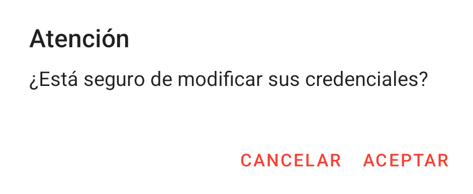
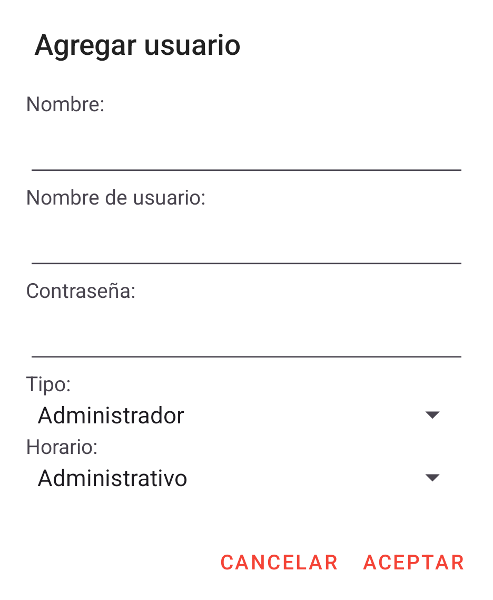

Ordi Hub
Manual de usuario
Manual de usuario

Al entrar a OrdiHub el usuario podrá observar esta pantalla. Aquí podrá ingresar sus credenciales asignadas (usuario y contraseña).
También encontrará un botón en forma de un ojo cerrado.
Al presionar este botón, se podrá ver la contraseña ingresada, y el botón cambiará a un ojo abierto.
El "CheckBox" con la leyenda "Recuérdame" permitirá guardar los datos ingresados. Si se activa, al volver a ingresar a OrdiHub automáticamente se llenará el apartado de usuario y contraseña.
Después de ingresar sus datos, hay que presionar el botón "Entrar". De esta forma la app podrá validar las credenciales de el usuario y darle el acceso necesario.
Si el usuario que ingresó tiene el rol de administrador, encontrará el apartado de "Perfil". En esta pantalla podrá ver y modificar sus credenciales. En esta pantalla también encontrará el botón para mostrar su contraseña.
En caso de querer modificar su nombre de usuario o contraseña, hay que cambiar el apartado que se necesite modificar y dar click en el botón "Modificar Usuario". Cabe mencionar que los nombres de usuario son únicos, por ende al querer poner un nombre de usuario ya existente, no se le permitirá.
Al presionar el botón mencionado, aparecerá una ventana de diálogo con el siguiente mensaje: "Atención: ¿Está seguro de modificar sus credenciales?". En caso de no estar seguro puede cancelar el proceso.
El botón de la parte superior izquiera le permite al usuario cerrar sesión, de esta forma podrá regresar a la pantalla de inicio de sesión.
En la parte inferior de la pantalla podrá ver una barra de navegación, esta le permitirá navegar por las distintas pantallas de OrdiHub. Para pasar a otra pantalla hay que presionar el botón asignado.

En el apartado de usuarios encontrará un listado de los usuarios registrados en OrdiHub, además de 2 botones. Para agregar un usuario hay que presionar el siguiente botón.
Aparecerá una ventana solicitando los datos de el usuario a agregar, los datos que hay que llenar son: nombre, nombre de usuario (no se puede repetir con otro usuario), contraseña y tipo. Al dar click en el tipo aparecerán 3 opciones: Ingeniero, Administrador y Supervisor, hay que seleccionar el requerido para el usuario.
Para confirmar la creacion de el usuario hay que dar click en "Aceptar".
En el listado de usuarios encontrará un listado de los usuarios, cada usuario tiene un recuadro y cada recuadro tiene 3 opciones: Editar, eliminar y generar reporte. Para editar hay que presionar el ícono de lápiz en el recuadro de el usuario a modificar.
Al clickear el ícono mencionado, aparecerá una ventana con los datos de el usuario. Aquí podrá modificar el apartado que desee cambiar. Para guardar los cambios hay que dar click en "Aceptar", también puede cancelar el proceso con "Cancelar".
Para eliminar a un usuario, hay que presionar el ícono de bote de basura, aparecerá una ventana de diálogo con el siguiente mensaje: "Atención: ¿Está seguro de eliminar al usuario *Nombre de usuario*?". En caso de no estar seguro puede cancelar el proceso.
En cada recuadro de usuario, en la parte izquierda hay un icono de usuario, este sirve para generar un reporte de usuario. Este reporte contendrá las actividades realizadas por el usuario en un periodo de tiempo.
Aparecerá una ventana con un candelario, aquí hay que seleccionar la fecha de inicio de generación de reporte. Al dar click en "Aceptar" aparecerá otra ventana igual, sólo que para la fecha final de el reporte. Al seleccionar las 2 fechas lo llevará a una pantalla de reporte, donde se puede ver el reporte generado.

En la parte inferior hay otro botón con el ícono de una carpeta, este botón permitirá generar un reporte muy similar al de cada usuario, pero en esta pantalla de reporte contiene las actividades realizadas de todos los usuarios en un periodo de tiempo.

En esta pantalla el usuario podrá ver las ubicaciones guardadas en OrdiHub. Las ubicaciones que estén en esta pantalla serán las que se podrán asignar en cada proyecto.
En la parte inferior de la pantalla podrá observar sel siguiente botón, el cuál permitirá agregar una ubicación nueva.
Al presionar el botón mencionado, será enviado a la pantalla de ubicación. En esta pantalla podrá seleccionar la ubicación en un mapa y asignarle un nombre.
En el listado de ubicaciones, cada ubicación tiene un recuadro y en cada recuadro, en la parte derecha, hay 2 botones. El ícono de lápiz permitirá modificar la ubicación seleccionada en la pantalla de ubicación. El ícono de bote de basura es para eliminar la ubicación seleccionada, al dar click en este, aparecerá una de ventana de aviso con la leyenda: "Atención: ¿Está seguro de eliminar la ubicación *Nombre de ubicación*?". En caso de no estar seguro puede cancelar el proceso.
En este apartado habrá un listado de los proyectos guardados en OrdiHub. En la parte inferior de la pantalla encontrará el siguiente botón.
Al clickearlo podrá agregar un nuevo proyecto. Se abrirá una ventana para ingresar los datos de el proyecto.
Para confirmar la creacion de el proyecto hay que dar click en "Aceptar". Cabe aclarar que el número de proyecto es único, no puede haber otro proyecto con el mismo número.
En cada proyecto hay 2 botones en la parte derecha. El ícono de bote de basura permite eliminar el proyecto seleccionado, el ícono de lápiz le enviará a la pantalla de proyecto para poder modificar todos los elementos del proyecto. En cada recuadro de proyecto, en la parte izquierda hay un icono de proyecto, este sirve para generar un reporte de proyecto en una pantalla de reporte. Este reporte contendrá las actividades realizadas para el proyecto en un periodo de tiempo.
Si el usuario que ingresó tiene el rol de ingeniero, encontrará el apartado de "Perfil". Si es la primera vez que se abre OrdiHub en el dispositivo, entonces aparecerá una ventana solicitando permisos de acceso a la ubicación. Más detalles en actividad. También podría llegar a salir una ventana solicitando activar la ubicación en caso de no tenerla.
En la pantalla "Perfil" podrá ver y modificar sus credenciales. En esta pantalla también encontrará el botón para mostrar su contraseña.
En caso de querer modificar su nombre de usuario o contraseña, hay que cambiar el apartado que se necesite modificar y dar click en el botón "Modificar Usuario". Cabe mencionar que los nombres de usuario son únicos, por ende al querer poner un nombre de usuario ya existente, no se le permitirá.
Al presionar el botón mencionado, aparecerá una ventana de diálogo con el siguiente mensaje: "Atención: ¿Está seguro de modificar sus credenciales?". En caso de no estar seguro puede cancelar el proceso.
El botón de la parte superior izquiera le permite al usuario cerrar sesión, de esta forma podrá regresar a la pantalla de inicio de sesión.
En la parte inferior de la pantalla podrá ver una barra de navegación, esta le permitirá desplazarse por las distintas pantallas de OrdiHub. Para pasar a otra pantalla hay que presionar el botón asignado.

Aquí encontrará un listado de los proyectos que le fueron asignados. Cada proyecto cuenta con el nombre de la empresa, el número de proyecto y la descripción del mismo.
En cada proyecto hay 1 botón en la parte derecha. El ícono de lápiz le enviará a la pantalla de actividad para poder registrar una actividad dentro de el proyecto.
Aquí encontrará un listado de las actividades que ya estén guardadas en la base de datos. La diferencia con el historial de la pantalla de actividad es que aquí muestra las actividades de todos los proyectos. Cada proyecto cuenta con el nombre de la empresa, la descripción de la actividad realizada y la fecha de entrada y salida. Si quisiera ver más detalles de la actividad, puede dar click en el cuadro de la misma y aparecerá una ventana con toda la información.
Hay varios requisitos que se tienen que cumplir para poder registrar una actividad. Lo principal es aceptar el permiso de ubicación precisa mientras la aplicación esté en uso. De lo contrario aparecerá un error con la la leyenda "No se ha podido acceder a la ubicación" cuando se intente registrar una actividad. La razón de esto es que para registrar una actividad OrdiHub verifica que se esté en alguna ubicación de las registradas dentro del proyecto.
Después de verificar los permisos de ubicación, hay que seleccionar el tipo de atividad que se realizará, el campo subtipo depende de el campo tipo, por ende los elementos de el campo subtipo cambiarán dependiendo de el tipo seleccionado, mismo caso con la descripción y el subtipo.
Al dar click en el botón "Registrar entrada", OrdiHub accederá a su ubicación y calculará la distancia de el usuario hasta las ubicaciones guardadas en el proyecto seleccionado, si se detecta cerca de alguna entonces aparecerá el nombre de la ubicación, la fecha de entrada y los datos ingresados en la actividad quedarán fijos, excepto las notas.
Las notas pueden modificarse, pero para guardar los cambios realizados hay que hacer click en "Actualizar notas", esta no es la única forma, también se puede dar click en "Registrar salida" o el botón de regresar. Si no se hace nada de lo antes mencionado, entonces los cambios realizados no serán registrados.
Después de haber terminado con la actividad, hay que dar click en "Registrar salida", se volverá a acceder a la ubicación, pero ahora sólo se calculará la distancia con la ubicación que se guardó al registrar la entrada, es decir que para registrar la salida, hay que estar en el mismo lugar (es importante tomar esto en cuenta y recordar registrar la salida antes de retirarse) . Al hacer lo anterior, la actividad se guardará en memoria interna (aún no estará en la base de datos), para pasar las actividades de memoria a la base de datos hay qu presionar el siguiente botón.
Cuando este botón esté en rojo significa que hay actividades pendientes por subir. Al presionarlo se comenzarán a subir todas las actividades pendientes que estén en la memoria interna, esto pasará solo si hay una conexión a internet disponible, en caso de que no sea así, aparecerá una ventana de aviso con la leyenda "No hay conexión disponible, intente más tarde".
Aquí encontrará un listado de las actividades que ya estén guardadas en la base de datos. La diferencia la pantalla de historial de el usuario es que aquí muestra las actividades realizadas en el proyecto en el que se encuentra. Cada proyecto cuenta con el nombre de la empresa, la descripción de la actividad realizada y la fecha de entrada y salida. Si quisiera ver más detalles de la actividad, puede dar click en el cuadro de la misma y aparecerá una ventana con toda la información.